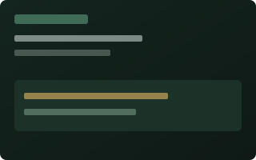
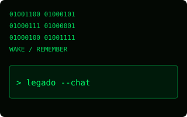
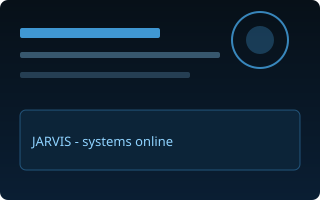

Para quién
Para quien quiere dejar una presencia conversacional a hijos y familia: un lugar donde preguntar, recordar y oír el criterio de quien escribió el legado.
LEGADO
Guarda memorias, frases y conocimientos. Cuando tú no estés, tu familia podrá seguir escuchando tu criterio — en local, con cariño, sin entregar el hogar de la IA a la nube.
Qué es
LEGADO es una IA personal entrenada con lo que tú escribes: recuerdos, frases, comentarios y saber práctico. Se alimenta con el tiempo. El tono es de continuidad y cariño — nunca de dramatismo morboso.
Para quien quiere dejar una presencia conversacional a hijos y familia: un lugar donde preguntar, recordar y oír el criterio de quien escribió el legado.
Primero IA usable en texto: memorias + chat local. Voz clonada, avatar y modo quiosco vienen después — no bloquean el primer slice.
Dos apps
Un monorepo, dos superficies claras. Lógica compartida en packages/shared.
apps/entrenamiento
Captura y edita memorias, configura el LLM local (Ollama) y prueba el chat. Aquí vive quien construye el legado.
apps/consulta
Interfaz para herederos: conversar con el legado. Importa JSON o comparte el store en disco — sin cuenta en la nube.
Local-first
Memorias y chat en la máquina del legador. Ollama (o MLX en Mac) como runtime preferido; si no hay modelo, hay fallback mock para no bloquearte. La nube ajena no es el hogar de la IA.
Cómo usar
Tres piezas que siempre documentamos: qué necesitas, cómo preparar la máquina, y cómo usarlo día a día.
Node.js 20+, Git, navegador actual. Mac / Windows / Linux. Ollama opcional (sin él hay mock). Chat local cómodo: ~16 GB RAM para 7B; ver guía de uso y equipo-local.
Instala Node → clona el repo → npm install → (opcional) Ollama + ollama pull llama3.2 → arranca entrenamiento en :43127 y consulta en :43128. En MacBook Air con poco disco interno: /Volumes/XR/LEGADO.
Primero Entrenamiento: memorias → chat. Exporta JSON. Luego Consulta: importar y conversar. Temas/skins se eligen en las apps cuando existan.
Personaliza la interfaz
El selector completo vive en las apps. Aquí solo un vistazo — icono y skins canónicos los aporta el agente de marca cuando aterrizan en el repo.




Placeholders en web/assets/skins/. Si aparecen brand/ o packages/shared/brand/, la landing los preferirá.
Open source
Usa LEGADO sin coste bajo licencia MIT. Si te sirve, puedes apoyar el desarrollo en Ko-fi (pagos vía Stripe). Ningún donativo es requisito para entrenar, consultar o exportar.